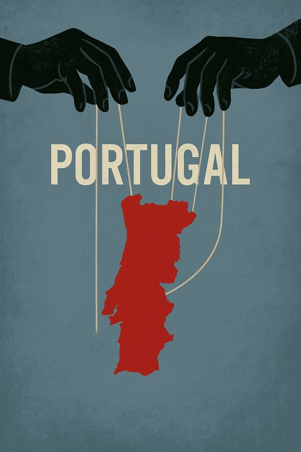

Publicado em 2025-07-08 12:17:48
Portugal — a nação que um dia se orgulhou de descobrir o mundo — hoje limita-se a descobrir como sacar fundos europeus com o mÃnimo de vergonha e o máximo de habilidade processual.
Já não somos um paÃs.
Somos uma empresa-fantasma com hino nacional, governo por procuração e ministérios que funcionam como departamentos de engenharia de fraudes.
A bazuca europeia era para recuperar.
Mas em Portugal, “recuperação†significa recuperar o tempo perdido para os amigos receberem consultorias, ajustes diretos, avenças, prémios de desempenho e licenças para gastar sem consequências.
Universidades que assinam contratos que nem compreendem.
Fundações que recebem milhões para eventos que não se realizam.
Empresas públicas que contratam estudos de impacto para coisas que já estão feitas.
E tudo justificado com palavras mágicas como:
“transformação digital”, “sustentabilidade”, “resiliência estrutural”.
Mentiras.
Tudo mentira envernizada de PowerPoint.
Em Portugal, a corrupção não é exceção — é método.
Não se trata de alguns maus exemplos.
Trata-se de uma estrutura montada para funcionar assim:
Enquanto isso:
Mas os culpados continuam por aà — em cargos, em painéis de debate, em conferências de “boas práticas”.
O burlão não está escondido.
Está à frente de nós, sorridente, com gravata e cartão de visita.
Assiste, conta os prejuÃzos e finge não ver.
Porque Portugal não rouba bancos europeus.
Rouba-se a si próprio — e depois estende a mão para mais.
Portugal tornou-se uma fraude institucionalizada com hino e brasão.
O paÃs da burocracia sem resultado, da justiça sem castigo, do talento sem futuro.
Não foi sabotado por estrangeiros.
Foi saqueado por dentro.
E só há duas opções:
Continuar a fingir que está tudo bem.
Ou gritar tão alto que nem a surdez institucional poderá ignorar.
Francisco Gonçalves
Cidadão de pé, entre os escombros da vergonha nacional